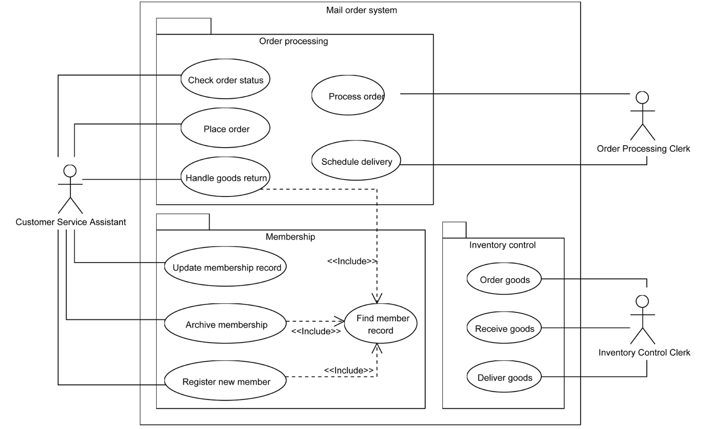

Due Fri week 9 at 23:59 (Total Marks: 10 points)
Deliverable #1 (1 Marks) due week 5 for professor review and feedback.
Based on the list of requirements you gathered in Part A of the project, develop a set of goal use cases per use case identify the actors (Operational stakeholders) involved and the requirements they relate to. Name each use case to reflect the functionality it serves using the name convention “Verb-Noun ” group the uses cases under two or three sub-systems / modules. You can base your grouping based on the similar functional areas or based on types of operational stakeholders, who are your end users. Add the use case table to section # 3 of your SRS document.
Check out the safe home case study there is a good example of how use cases can be grouped.
Note: If you have abstract uses cases for example “Log into system” add it at the end of the table and do not enter the actors. Your actors should be operational stakeholders. Per project at least two different actors (operational stakeholders) are required, do not use the term end user, rather have a name for each role.
Below an Example for the use case table:
|
Use cases |
|||
|
Use Case name |
List of related Requirements ID |
Actor (s) |
Brief Description |
|
Create service request |
FR05, FR04 |
Student, Faculty |
The actor will click on the service request button , in response the software will present the actor with a form and the user will select the type and sub-type of the service request and enter the details, the software will automatically generated a unique service request # and send a confirmation e-mail with the service request number to the actor. |
|
..... |
....... |
|
|
|
|
|
|
|
Deliverable #2 (2 mark) due week 6 for professor review and feedback
Select one use case with high priority and develop a textual detailed formal use case description, using the use case template in chapter #8 page 136. Supplement the use case with a swim lane activity diagram, explaining the flow of activities between the system and the actor(s). Add the use-case formal descriptions and the activity swim lane diagrams to section #4 of your SRS document.
Deliverable #3 (1 mark) due week 6 for professor review and feedback
Using “Microsoft Visio” draw a use case diagram illustrating all the use cases identified in deliverable 1 above grouped by sub-system. Add the output to section #4 of your SRS document.
Click on the following link for details on how to draw use case diagrams using Microsoft Visio: Visio use case diagram
Below is use case diagram example:

Image source: Object-Oriented Technology From Diagram to Code with Visual Paradigm for UML. Curtis H.K. Tsang, Clarence S.W. Lau and Y.K. Leung.
Deliverable #4 (2 mark) due week 8 for professor review and feedback
Based on the use case descriptions, use the “Noun” technique to identify a list of analysis classes related to the domain problem/opportunity of your project. Brainstorm with your team to identify the list of attributes related to each class and the class relationships, for example binary association, inheritance…etc. and describe these relationships, for example a customer places an order, an order belongs to one customer. Draw, using “Microsoft Visio” a first cut domain class diagram. Add the domain class diagram to Appendix E of your SRS document under class diagrams
Refer to Appendix 1 in your text book for examples on Class diagrams, and the below links on how to Microsoft Visio
Deliverable #5 (2 mark) due week 8 for professor review and feedback
Brainstorm with your team to develop a set of Class responsibilities and collaboration “CRC cards” for all entity type classes. Add the CRC index cards to Appendix E of your SRS document under class diagrams.
Deliverable #6 (2 mark) due week 9 for professor review and feedback
Based on the responsibilities and collaborations identified in your CRC index cards update your first cut domain class diagram with the following:
a. Class attribute descriptions and visibilities
b. Signature methods with the respective parameters and visibilities
Add the class diagram to Appendix E of your SRS document under class diagrams.